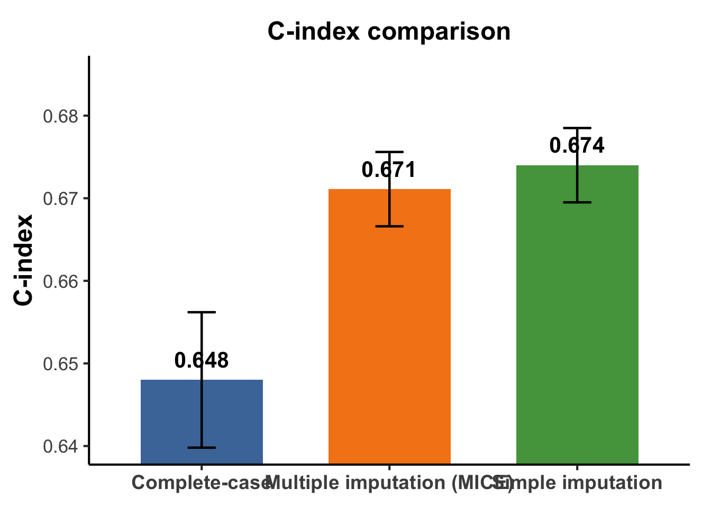
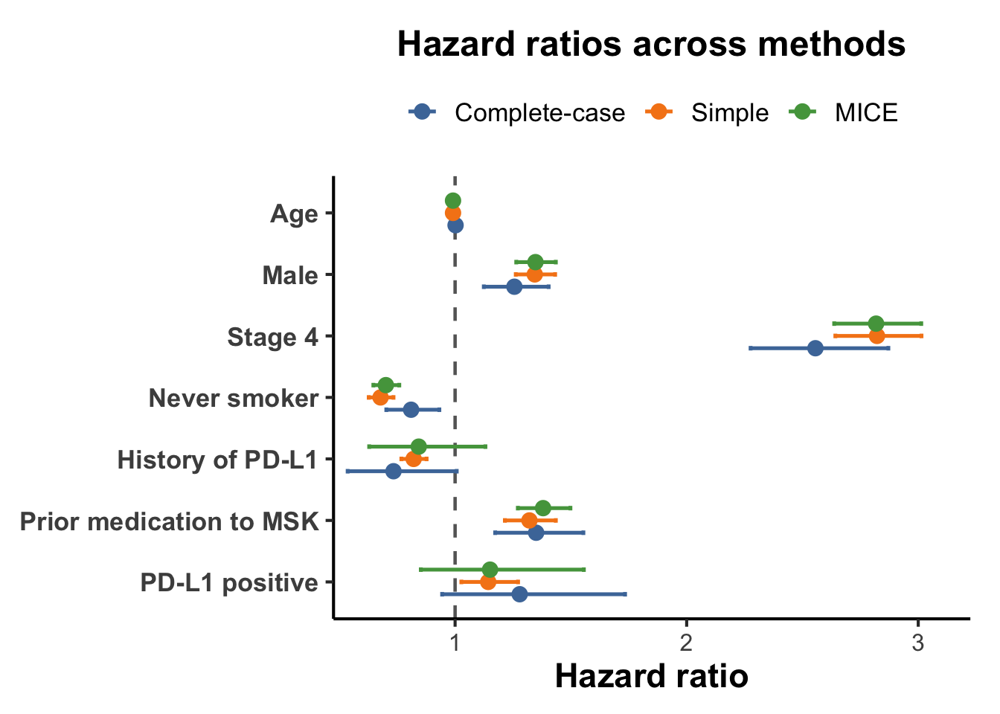
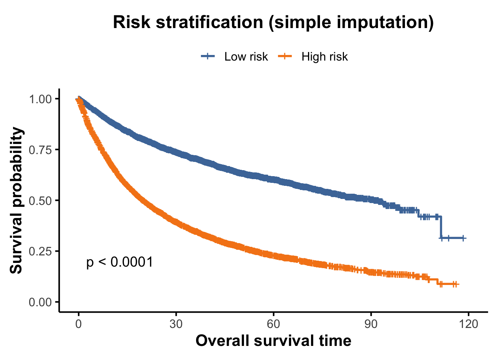

set.seed(629)
library(data.table)
library(dplyr)
library(stringr)
library(survival)
library(mice)
library(broom)
library(ggplot2)
library(survminer)
options(stringsAsFactors = FALSE)
dir.create("figures", showWarnings = FALSE)
dir.create("tables", showWarnings = FALSE)
dir.create("models", showWarnings = FALSE)
dir.create("datasets", showWarnings = FALSE)
fig_dir <- "figures"
tab_dir <- "tables"
model_dir <- "models"
data_dir <- "datasets"Final Project Reproducibility Report
Setup
Read data
patient_url <- "https://media.githubusercontent.com/media/cBioPortal/datahub/refs/heads/master/public/msk_chord_2024/data_clinical_patient.txt"
sample_url <- "https://media.githubusercontent.com/media/cBioPortal/datahub/refs/heads/master/public/msk_chord_2024/data_clinical_sample.txt"
patient <- read.delim(
patient_url,
comment.char = "#",
stringsAsFactors = FALSE,
check.names = FALSE
)
sample <- read.delim(
sample_url,
comment.char = "#",
stringsAsFactors = FALSE,
check.names = FALSE
)Build analysis dataset
clean_missing <- function(x) {
if (is.character(x) || is.factor(x)) {
x <- trimws(as.character(x))
x[x %in% c("", "NA", "Unknown", "UNKNOWN", "Not Available", "NOT_AVAILABLE", "Not Reported", "NOT_REPORTED")] <- NA
}
x
}
get_mode <- function(x) {
ux <- unique(x[!is.na(x)])
ux[which.max(tabulate(match(x, ux)))]
}
sample1 <- sample %>%
group_by(PATIENT_ID) %>%
slice(1) %>%
ungroup() %>%
select(
PATIENT_ID,
CANCER_TYPE,
TMB_NONSYNONYMOUS,
MSI_SCORE,
MSI_TYPE,
PDL1_POSITIVE
)
nsclc_analysis_df <- patient %>%
select(
PATIENT_ID,
OS_MONTHS,
OS_STATUS,
CURRENT_AGE_DEID,
GENDER,
STAGE_HIGHEST_RECORDED,
SMOKING_PREDICTIONS_3_CLASSES,
HISTORY_OF_PDL1,
PRIOR_MED_TO_MSK
) %>%
left_join(sample1, by = "PATIENT_ID") %>%
filter(str_detect(CANCER_TYPE, regex("non-small cell lung|nsclc", ignore_case = TRUE))) %>%
mutate(
across(
c(
GENDER, STAGE_HIGHEST_RECORDED, SMOKING_PREDICTIONS_3_CLASSES,
HISTORY_OF_PDL1, PRIOR_MED_TO_MSK, PDL1_POSITIVE, MSI_TYPE
),
clean_missing
),
OS_MONTHS = suppressWarnings(as.numeric(OS_MONTHS)),
CURRENT_AGE_DEID = suppressWarnings(as.numeric(CURRENT_AGE_DEID)),
TMB_NONSYNONYMOUS = suppressWarnings(as.numeric(TMB_NONSYNONYMOUS)),
MSI_SCORE = suppressWarnings(as.numeric(MSI_SCORE)),
event = ifelse(OS_STATUS == "1:DECEASED", 1L, 0L)
)
model_vars <- c(
"OS_MONTHS", "event", "CURRENT_AGE_DEID", "GENDER",
"STAGE_HIGHEST_RECORDED", "TMB_NONSYNONYMOUS",
"SMOKING_PREDICTIONS_3_CLASSES", "HISTORY_OF_PDL1",
"PRIOR_MED_TO_MSK", "PDL1_POSITIVE"
)Cohort summaries
cohort_summary <- data.frame(
n = nrow(nsclc_analysis_df),
events = sum(nsclc_analysis_df$event == 1, na.rm = TRUE),
event_rate_pct = round(100 * mean(nsclc_analysis_df$event == 1, na.rm = TRUE), 2),
median_os = round(median(nsclc_analysis_df$OS_MONTHS, na.rm = TRUE), 2),
q1_os = round(quantile(nsclc_analysis_df$OS_MONTHS, 0.25, na.rm = TRUE), 2),
q3_os = round(quantile(nsclc_analysis_df$OS_MONTHS, 0.75, na.rm = TRUE), 2),
mean_os = round(mean(nsclc_analysis_df$OS_MONTHS, na.rm = TRUE), 2)
)
missingness_final <- data.frame(
variable = model_vars[model_vars != "OS_MONTHS" & model_vars != "event"],
missing_n = sapply(model_vars[model_vars != "OS_MONTHS" & model_vars != "event"], function(v) sum(is.na(nsclc_analysis_df[[v]]))),
missing_pct = round(
100 * sapply(model_vars[model_vars != "OS_MONTHS" & model_vars != "event"], function(v) sum(is.na(nsclc_analysis_df[[v]]))) / nrow(nsclc_analysis_df),
2
)
) %>%
arrange(desc(missing_pct))
complete_case_summary_final <- data.frame(
n = nrow(nsclc_analysis_df),
complete_case_n = sum(complete.cases(nsclc_analysis_df[, model_vars])),
complete_case_pct = round(100 * sum(complete.cases(nsclc_analysis_df[, model_vars])) / nrow(nsclc_analysis_df), 2)
)
cohort_summary n events event_rate_pct median_os q1_os q3_os mean_os
25% 7767 3953 50.89 22.32 9.37 46.27 30.09missingness_final variable missing_n
PDL1_POSITIVE PDL1_POSITIVE 4471
HISTORY_OF_PDL1 HISTORY_OF_PDL1 1576
PRIOR_MED_TO_MSK PRIOR_MED_TO_MSK 1150
SMOKING_PREDICTIONS_3_CLASSES SMOKING_PREDICTIONS_3_CLASSES 343
CURRENT_AGE_DEID CURRENT_AGE_DEID 1
GENDER GENDER 1
STAGE_HIGHEST_RECORDED STAGE_HIGHEST_RECORDED 1
TMB_NONSYNONYMOUS TMB_NONSYNONYMOUS 0
missing_pct
PDL1_POSITIVE 57.56
HISTORY_OF_PDL1 20.29
PRIOR_MED_TO_MSK 14.81
SMOKING_PREDICTIONS_3_CLASSES 4.42
CURRENT_AGE_DEID 0.01
GENDER 0.01
STAGE_HIGHEST_RECORDED 0.01
TMB_NONSYNONYMOUS 0.00complete_case_summary_final n complete_case_n complete_case_pct
1 7767 2861 36.84write.csv(cohort_summary, file.path(tab_dir, "cohort_summary_nsclc.csv"), row.names = FALSE)
write.csv(missingness_final, file.path(tab_dir, "missingness_final_nsclc.csv"), row.names = FALSE)
write.csv(complete_case_summary_final, file.path(tab_dir, "complete_case_summary_final_nsclc.csv"), row.names = FALSE)Complete-case analysis
cc_df <- nsclc_analysis_df %>%
select(all_of(model_vars)) %>%
filter(complete.cases(.)) %>%
mutate(
GENDER = factor(GENDER),
STAGE_HIGHEST_RECORDED = factor(STAGE_HIGHEST_RECORDED),
SMOKING_PREDICTIONS_3_CLASSES = factor(SMOKING_PREDICTIONS_3_CLASSES),
HISTORY_OF_PDL1 = factor(HISTORY_OF_PDL1),
PRIOR_MED_TO_MSK = factor(PRIOR_MED_TO_MSK),
PDL1_POSITIVE = factor(PDL1_POSITIVE)
)
cox_cc <- coxph(
Surv(OS_MONTHS, event) ~ CURRENT_AGE_DEID + GENDER + STAGE_HIGHEST_RECORDED +
TMB_NONSYNONYMOUS + SMOKING_PREDICTIONS_3_CLASSES + HISTORY_OF_PDL1 +
PRIOR_MED_TO_MSK + PDL1_POSITIVE,
data = cc_df
)
cc_results <- tidy(cox_cc, exponentiate = TRUE, conf.int = TRUE)
cc_perf <- data.frame(
method = "Complete-case",
n = nrow(cc_df),
events = sum(cc_df$event == 1),
c_index = round(summary(cox_cc)$concordance[1], 4),
c_index_se = round(summary(cox_cc)$concordance[2], 4)
)
cc_df <- cc_df %>%
mutate(
risk_score = predict(cox_cc, type = "lp"),
risk_group = ifelse(risk_score >= median(risk_score, na.rm = TRUE), "High risk", "Low risk"),
risk_group = factor(risk_group, levels = c("Low risk", "High risk"))
)
cc_perf method n events c_index c_index_se
C Complete-case 2861 1287 0.648 0.0082cc_results# A tibble: 8 × 7
term estimate std.error statistic p.value conf.low conf.high
<chr> <dbl> <dbl> <dbl> <dbl> <dbl> <dbl>
1 CURRENT_AGE_DEID 1.00 0.00281 0.718 4.73e- 1 0.997 1.01
2 GENDERMale 1.26 0.0566 4.03 5.58e- 5 1.12 1.40
3 STAGE_HIGHEST_RECORD… 2.56 0.0592 15.9 1.12e-56 2.28 2.87
4 TMB_NONSYNONYMOUS 1.00 0.00356 0.619 5.36e- 1 0.995 1.01
5 SMOKING_PREDICTIONS_… 0.810 0.0718 -2.94 3.24e- 3 0.703 0.932
6 HISTORY_OF_PDL1Yes 0.734 0.161 -1.92 5.52e- 2 0.536 1.01
7 PRIOR_MED_TO_MSKPrio… 1.35 0.0717 4.18 2.87e- 5 1.17 1.55
8 PDL1_POSITIVEYes 1.28 0.155 1.59 1.12e- 1 0.944 1.73 write.csv(cc_results, file.path(tab_dir, "cox_complete_case_results.csv"), row.names = FALSE)
write.csv(cc_perf, file.path(tab_dir, "cox_complete_case_performance.csv"), row.names = FALSE)
write.csv(cc_df, file.path(data_dir, "complete_case_dataset_with_riskscore.csv"), row.names = FALSE)
saveRDS(cox_cc, file.path(model_dir, "cox_complete_case_model.rds"))
saveRDS(cc_df, file.path(data_dir, "complete_case_dataset_with_riskscore.rds"))Simple imputation
si_df <- nsclc_analysis_df %>%
select(all_of(model_vars))
si_df$CURRENT_AGE_DEID[is.na(si_df$CURRENT_AGE_DEID)] <- median(si_df$CURRENT_AGE_DEID, na.rm = TRUE)
si_df$TMB_NONSYNONYMOUS[is.na(si_df$TMB_NONSYNONYMOUS)] <- median(si_df$TMB_NONSYNONYMOUS, na.rm = TRUE)
cat_vars <- c(
"GENDER", "STAGE_HIGHEST_RECORDED", "SMOKING_PREDICTIONS_3_CLASSES",
"HISTORY_OF_PDL1", "PRIOR_MED_TO_MSK", "PDL1_POSITIVE"
)
for (v in cat_vars) {
si_df[[v]][is.na(si_df[[v]])] <- get_mode(si_df[[v]])
}
si_df <- si_df %>%
mutate(
GENDER = factor(GENDER),
STAGE_HIGHEST_RECORDED = factor(STAGE_HIGHEST_RECORDED),
SMOKING_PREDICTIONS_3_CLASSES = factor(SMOKING_PREDICTIONS_3_CLASSES),
HISTORY_OF_PDL1 = factor(HISTORY_OF_PDL1),
PRIOR_MED_TO_MSK = factor(PRIOR_MED_TO_MSK),
PDL1_POSITIVE = factor(PDL1_POSITIVE)
)
cox_si <- coxph(
Surv(OS_MONTHS, event) ~ CURRENT_AGE_DEID + GENDER + STAGE_HIGHEST_RECORDED +
TMB_NONSYNONYMOUS + SMOKING_PREDICTIONS_3_CLASSES + HISTORY_OF_PDL1 +
PRIOR_MED_TO_MSK + PDL1_POSITIVE,
data = si_df
)
si_results <- tidy(cox_si, exponentiate = TRUE, conf.int = TRUE)
si_perf <- data.frame(
method = "Simple imputation",
n = nrow(si_df),
events = sum(si_df$event == 1),
c_index = round(summary(cox_si)$concordance[1], 4),
c_index_se = round(summary(cox_si)$concordance[2], 4)
)
si_df <- si_df %>%
mutate(
risk_score = predict(cox_si, type = "lp"),
risk_group = ifelse(risk_score >= median(risk_score, na.rm = TRUE), "High risk", "Low risk"),
risk_group = factor(risk_group, levels = c("Low risk", "High risk"))
)
si_perf method n events c_index c_index_se
C Simple imputation 7767 3953 0.674 0.0045si_results# A tibble: 8 × 7
term estimate std.error statistic p.value conf.low conf.high
<chr> <dbl> <dbl> <dbl> <dbl> <dbl> <dbl>
1 CURRENT_AGE_DEID 0.991 0.00152 -5.82 5.76e- 9 0.988 0.994
2 GENDERMale 1.34 0.0323 9.15 5.59e- 20 1.26 1.43
3 STAGE_HIGHEST_RECOR… 2.82 0.0337 30.8 1.55e-208 2.64 3.01
4 TMB_NONSYNONYMOUS 1.00 0.00186 1.13 2.57e- 1 0.998 1.01
5 SMOKING_PREDICTIONS… 0.678 0.0401 -9.68 3.54e- 22 0.627 0.734
6 HISTORY_OF_PDL1Yes 0.821 0.0339 -5.83 5.45e- 9 0.768 0.877
7 PRIOR_MED_TO_MSKPri… 1.32 0.0425 6.54 6.28e- 11 1.21 1.44
8 PDL1_POSITIVEYes 1.14 0.0545 2.45 1.42e- 2 1.03 1.27 write.csv(si_results, file.path(tab_dir, "cox_simple_imputation_results.csv"), row.names = FALSE)
write.csv(si_perf, file.path(tab_dir, "cox_simple_imputation_performance.csv"), row.names = FALSE)
write.csv(si_df, file.path(data_dir, "simple_imputation_dataset_with_riskscore.csv"), row.names = FALSE)
saveRDS(cox_si, file.path(model_dir, "cox_simple_imputation_model.rds"))
saveRDS(si_df, file.path(data_dir, "simple_imputation_dataset_with_riskscore.rds"))MICE
mi_df <- nsclc_analysis_df %>%
select(all_of(model_vars))
mi_df$CURRENT_AGE_DEID[is.na(mi_df$CURRENT_AGE_DEID)] <- median(mi_df$CURRENT_AGE_DEID, na.rm = TRUE)
mi_df$GENDER[is.na(mi_df$GENDER)] <- get_mode(mi_df$GENDER)
mi_df$STAGE_HIGHEST_RECORDED[is.na(mi_df$STAGE_HIGHEST_RECORDED)] <- get_mode(mi_df$STAGE_HIGHEST_RECORDED)
mi_df <- mi_df %>%
mutate(
GENDER = factor(GENDER),
STAGE_HIGHEST_RECORDED = factor(STAGE_HIGHEST_RECORDED),
SMOKING_PREDICTIONS_3_CLASSES = factor(SMOKING_PREDICTIONS_3_CLASSES),
HISTORY_OF_PDL1 = factor(HISTORY_OF_PDL1),
PRIOR_MED_TO_MSK = factor(PRIOR_MED_TO_MSK),
PDL1_POSITIVE = factor(PDL1_POSITIVE)
)
init <- mice(mi_df, maxit = 0, printFlag = FALSE)
meth <- init$method
pred <- init$predictorMatrix
meth[c("OS_MONTHS", "event", "CURRENT_AGE_DEID", "GENDER", "STAGE_HIGHEST_RECORDED", "TMB_NONSYNONYMOUS")] <- ""
meth["SMOKING_PREDICTIONS_3_CLASSES"] <- "polyreg"
meth["HISTORY_OF_PDL1"] <- "logreg"
meth["PRIOR_MED_TO_MSK"] <- "logreg"
meth["PDL1_POSITIVE"] <- "logreg"
pred[, c("OS_MONTHS", "event")] <- 1
pred[c("OS_MONTHS", "event"), ] <- 0
pred[c("CURRENT_AGE_DEID", "GENDER", "STAGE_HIGHEST_RECORDED", "TMB_NONSYNONYMOUS"), ] <- 0
diag(pred) <- 0
imp <- mice(
mi_df,
m = 5,
method = meth,
predictorMatrix = pred,
maxit = 10,
seed = 629,
printFlag = TRUE
)
iter imp variable
1 1 SMOKING_PREDICTIONS_3_CLASSES HISTORY_OF_PDL1 PRIOR_MED_TO_MSK PDL1_POSITIVE
1 2 SMOKING_PREDICTIONS_3_CLASSES HISTORY_OF_PDL1 PRIOR_MED_TO_MSK PDL1_POSITIVE
1 3 SMOKING_PREDICTIONS_3_CLASSES HISTORY_OF_PDL1 PRIOR_MED_TO_MSK PDL1_POSITIVE
1 4 SMOKING_PREDICTIONS_3_CLASSES HISTORY_OF_PDL1 PRIOR_MED_TO_MSK PDL1_POSITIVE
1 5 SMOKING_PREDICTIONS_3_CLASSES HISTORY_OF_PDL1 PRIOR_MED_TO_MSK PDL1_POSITIVE
2 1 SMOKING_PREDICTIONS_3_CLASSES HISTORY_OF_PDL1 PRIOR_MED_TO_MSK PDL1_POSITIVE
2 2 SMOKING_PREDICTIONS_3_CLASSES HISTORY_OF_PDL1 PRIOR_MED_TO_MSK PDL1_POSITIVE
2 3 SMOKING_PREDICTIONS_3_CLASSES HISTORY_OF_PDL1 PRIOR_MED_TO_MSK PDL1_POSITIVE
2 4 SMOKING_PREDICTIONS_3_CLASSES HISTORY_OF_PDL1 PRIOR_MED_TO_MSK PDL1_POSITIVE
2 5 SMOKING_PREDICTIONS_3_CLASSES HISTORY_OF_PDL1 PRIOR_MED_TO_MSK PDL1_POSITIVE
3 1 SMOKING_PREDICTIONS_3_CLASSES HISTORY_OF_PDL1 PRIOR_MED_TO_MSK PDL1_POSITIVE
3 2 SMOKING_PREDICTIONS_3_CLASSES HISTORY_OF_PDL1 PRIOR_MED_TO_MSK PDL1_POSITIVE
3 3 SMOKING_PREDICTIONS_3_CLASSES HISTORY_OF_PDL1 PRIOR_MED_TO_MSK PDL1_POSITIVE
3 4 SMOKING_PREDICTIONS_3_CLASSES HISTORY_OF_PDL1 PRIOR_MED_TO_MSK PDL1_POSITIVE
3 5 SMOKING_PREDICTIONS_3_CLASSES HISTORY_OF_PDL1 PRIOR_MED_TO_MSK PDL1_POSITIVE
4 1 SMOKING_PREDICTIONS_3_CLASSES HISTORY_OF_PDL1 PRIOR_MED_TO_MSK PDL1_POSITIVE
4 2 SMOKING_PREDICTIONS_3_CLASSES HISTORY_OF_PDL1 PRIOR_MED_TO_MSK PDL1_POSITIVE
4 3 SMOKING_PREDICTIONS_3_CLASSES HISTORY_OF_PDL1 PRIOR_MED_TO_MSK PDL1_POSITIVE
4 4 SMOKING_PREDICTIONS_3_CLASSES HISTORY_OF_PDL1 PRIOR_MED_TO_MSK PDL1_POSITIVE
4 5 SMOKING_PREDICTIONS_3_CLASSES HISTORY_OF_PDL1 PRIOR_MED_TO_MSK PDL1_POSITIVE
5 1 SMOKING_PREDICTIONS_3_CLASSES HISTORY_OF_PDL1 PRIOR_MED_TO_MSK PDL1_POSITIVE
5 2 SMOKING_PREDICTIONS_3_CLASSES HISTORY_OF_PDL1 PRIOR_MED_TO_MSK PDL1_POSITIVE
5 3 SMOKING_PREDICTIONS_3_CLASSES HISTORY_OF_PDL1 PRIOR_MED_TO_MSK PDL1_POSITIVE
5 4 SMOKING_PREDICTIONS_3_CLASSES HISTORY_OF_PDL1 PRIOR_MED_TO_MSK PDL1_POSITIVE
5 5 SMOKING_PREDICTIONS_3_CLASSES HISTORY_OF_PDL1 PRIOR_MED_TO_MSK PDL1_POSITIVE
6 1 SMOKING_PREDICTIONS_3_CLASSES HISTORY_OF_PDL1 PRIOR_MED_TO_MSK PDL1_POSITIVE
6 2 SMOKING_PREDICTIONS_3_CLASSES HISTORY_OF_PDL1 PRIOR_MED_TO_MSK PDL1_POSITIVE
6 3 SMOKING_PREDICTIONS_3_CLASSES HISTORY_OF_PDL1 PRIOR_MED_TO_MSK PDL1_POSITIVE
6 4 SMOKING_PREDICTIONS_3_CLASSES HISTORY_OF_PDL1 PRIOR_MED_TO_MSK PDL1_POSITIVE
6 5 SMOKING_PREDICTIONS_3_CLASSES HISTORY_OF_PDL1 PRIOR_MED_TO_MSK PDL1_POSITIVE
7 1 SMOKING_PREDICTIONS_3_CLASSES HISTORY_OF_PDL1 PRIOR_MED_TO_MSK PDL1_POSITIVE
7 2 SMOKING_PREDICTIONS_3_CLASSES HISTORY_OF_PDL1 PRIOR_MED_TO_MSK PDL1_POSITIVE
7 3 SMOKING_PREDICTIONS_3_CLASSES HISTORY_OF_PDL1 PRIOR_MED_TO_MSK PDL1_POSITIVE
7 4 SMOKING_PREDICTIONS_3_CLASSES HISTORY_OF_PDL1 PRIOR_MED_TO_MSK PDL1_POSITIVE
7 5 SMOKING_PREDICTIONS_3_CLASSES HISTORY_OF_PDL1 PRIOR_MED_TO_MSK PDL1_POSITIVE
8 1 SMOKING_PREDICTIONS_3_CLASSES HISTORY_OF_PDL1 PRIOR_MED_TO_MSK PDL1_POSITIVE
8 2 SMOKING_PREDICTIONS_3_CLASSES HISTORY_OF_PDL1 PRIOR_MED_TO_MSK PDL1_POSITIVE
8 3 SMOKING_PREDICTIONS_3_CLASSES HISTORY_OF_PDL1 PRIOR_MED_TO_MSK PDL1_POSITIVE
8 4 SMOKING_PREDICTIONS_3_CLASSES HISTORY_OF_PDL1 PRIOR_MED_TO_MSK PDL1_POSITIVE
8 5 SMOKING_PREDICTIONS_3_CLASSES HISTORY_OF_PDL1 PRIOR_MED_TO_MSK PDL1_POSITIVE
9 1 SMOKING_PREDICTIONS_3_CLASSES HISTORY_OF_PDL1 PRIOR_MED_TO_MSK PDL1_POSITIVE
9 2 SMOKING_PREDICTIONS_3_CLASSES HISTORY_OF_PDL1 PRIOR_MED_TO_MSK PDL1_POSITIVE
9 3 SMOKING_PREDICTIONS_3_CLASSES HISTORY_OF_PDL1 PRIOR_MED_TO_MSK PDL1_POSITIVE
9 4 SMOKING_PREDICTIONS_3_CLASSES HISTORY_OF_PDL1 PRIOR_MED_TO_MSK PDL1_POSITIVE
9 5 SMOKING_PREDICTIONS_3_CLASSES HISTORY_OF_PDL1 PRIOR_MED_TO_MSK PDL1_POSITIVE
10 1 SMOKING_PREDICTIONS_3_CLASSES HISTORY_OF_PDL1 PRIOR_MED_TO_MSK PDL1_POSITIVE
10 2 SMOKING_PREDICTIONS_3_CLASSES HISTORY_OF_PDL1 PRIOR_MED_TO_MSK PDL1_POSITIVE
10 3 SMOKING_PREDICTIONS_3_CLASSES HISTORY_OF_PDL1 PRIOR_MED_TO_MSK PDL1_POSITIVE
10 4 SMOKING_PREDICTIONS_3_CLASSES HISTORY_OF_PDL1 PRIOR_MED_TO_MSK PDL1_POSITIVE
10 5 SMOKING_PREDICTIONS_3_CLASSES HISTORY_OF_PDL1 PRIOR_MED_TO_MSK PDL1_POSITIVEfit_mi <- with(
imp,
coxph(
Surv(OS_MONTHS, event) ~ CURRENT_AGE_DEID + GENDER + STAGE_HIGHEST_RECORDED +
TMB_NONSYNONYMOUS + SMOKING_PREDICTIONS_3_CLASSES + HISTORY_OF_PDL1 +
PRIOR_MED_TO_MSK + PDL1_POSITIVE
)
)
pooled_fit <- pool(fit_mi)
mi_results <- summary(pooled_fit) %>%
mutate(
HR = exp(estimate),
conf.low = exp(estimate - 1.96 * std.error),
conf.high = exp(estimate + 1.96 * std.error)
)
get_cindex <- function(i) {
dat_i <- complete(imp, action = i)
fit_i <- coxph(
Surv(OS_MONTHS, event) ~ CURRENT_AGE_DEID + GENDER + STAGE_HIGHEST_RECORDED +
TMB_NONSYNONYMOUS + SMOKING_PREDICTIONS_3_CLASSES + HISTORY_OF_PDL1 +
PRIOR_MED_TO_MSK + PDL1_POSITIVE,
data = dat_i
)
c(summary(fit_i)$concordance[1], summary(fit_i)$concordance[2])
}
cindex_mat <- do.call(rbind, lapply(1:5, get_cindex))
colnames(cindex_mat) <- c("c_index", "c_index_se")
mi_perf <- data.frame(
method = "Multiple imputation (MICE)",
n = nrow(mi_df),
events = sum(mi_df$event == 1),
c_index = round(mean(cindex_mat[, "c_index"]), 4),
c_index_se = round(mean(cindex_mat[, "c_index_se"]), 4)
)
mi_df1 <- complete(imp, action = 1)
cox_mi1 <- coxph(
Surv(OS_MONTHS, event) ~ CURRENT_AGE_DEID + GENDER + STAGE_HIGHEST_RECORDED +
TMB_NONSYNONYMOUS + SMOKING_PREDICTIONS_3_CLASSES + HISTORY_OF_PDL1 +
PRIOR_MED_TO_MSK + PDL1_POSITIVE,
data = mi_df1
)
mi_df1 <- mi_df1 %>%
mutate(
risk_score = predict(cox_mi1, type = "lp"),
risk_group = ifelse(risk_score >= median(risk_score, na.rm = TRUE), "High risk", "Low risk"),
risk_group = factor(risk_group, levels = c("Low risk", "High risk"))
)
mi_results_clean <- mi_results[, c("term", "HR", "conf.low", "conf.high", "p.value")]
mi_perf method n events c_index c_index_se
1 Multiple imputation (MICE) 7767 3953 0.6711 0.0045mi_results_clean term HR conf.low conf.high
1 CURRENT_AGE_DEID 0.9912535 0.9882908 0.9942250
2 GENDERMale 1.3471558 1.2643739 1.4353576
3 STAGE_HIGHEST_RECORDEDStage 4 2.8184866 2.6367152 3.0127892
4 TMB_NONSYNONYMOUS 1.0017962 0.9980909 1.0055151
5 SMOKING_PREDICTIONS_3_CLASSESNever 0.7010837 0.6472663 0.7593759
6 HISTORY_OF_PDL1Yes 0.8432219 0.6286014 1.1311192
7 PRIOR_MED_TO_MSKPrior medications to MSK 1.3799654 1.2714650 1.4977247
8 PDL1_POSITIVEYes 1.1512379 0.8516624 1.5561902
p.value
1 9.466298e-09
2 5.205040e-20
3 3.080874e-179
4 3.425740e-01
5 1.381338e-17
6 2.718367e-01
7 6.456262e-14
8 3.745248e-01write.csv(mi_results, file.path(tab_dir, "cox_mice_results_full.csv"), row.names = FALSE)
write.csv(mi_results_clean, file.path(tab_dir, "cox_mice_results_clean.csv"), row.names = FALSE)
write.csv(mi_perf, file.path(tab_dir, "cox_mice_performance.csv"), row.names = FALSE)
write.csv(mi_df1, file.path(data_dir, "mice_dataset1_with_riskscore.csv"), row.names = FALSE)
saveRDS(imp, file.path(model_dir, "mice_object.rds"))
saveRDS(pooled_fit, file.path(model_dir, "cox_mice_pooled_model.rds"))
saveRDS(mi_df1, file.path(data_dir, "mice_dataset1_with_riskscore.rds"))
saveRDS(mi_results, file.path(model_dir, "cox_mice_results_full.rds"))
saveRDS(mi_perf, file.path(model_dir, "cox_mice_performance.rds"))Performance comparison
performance_compare <- bind_rows(cc_perf, si_perf, mi_perf)
performance_compare_clean <- performance_compare %>%
mutate(
method = c("Complete-case", "Simple imputation", "Multiple imputation (MICE)")
)
performance_compare_clean method n events c_index c_index_se
C...1 Complete-case 2861 1287 0.6480 0.0082
C...2 Simple imputation 7767 3953 0.6740 0.0045
...3 Multiple imputation (MICE) 7767 3953 0.6711 0.0045write.csv(performance_compare_clean, file.path(tab_dir, "performance_comparison_all_methods_clean.csv"), row.names = FALSE)p_cindex <- ggplot(performance_compare_clean, aes(x = method, y = c_index, fill = method)) +
geom_col(width = 0.65, show.legend = FALSE) +
geom_errorbar(aes(ymin = c_index - c_index_se, ymax = c_index + c_index_se), width = 0.15, linewidth = 0.8) +
geom_text(aes(label = sprintf("%.3f", c_index)), vjust = -0.8, size = 5.5, fontface = "bold", color = "black") +
coord_cartesian(ylim = c(0.64, 0.685)) +
scale_fill_manual(values = c("#4C78A8", "#F58518", "#54A24B")) +
labs(title = "C-index comparison", x = NULL, y = "C-index") +
theme_classic(base_size = 16) +
theme(
plot.title = element_text(size = 18, face = "bold", hjust = 0.5),
axis.title.y = element_text(size = 18, face = "bold"),
axis.text.x = element_text(size = 14, face = "bold"),
axis.text.y = element_text(size = 13),
plot.margin = margin(15, 15, 10, 10)
)
p_cindex
ggsave(file.path(fig_dir, "cindex_plot_poster_final.png"), p_cindex, width = 10, height = 5.8, dpi = 300, bg = "white")Hazard ratio comparison
cc_hr <- cc_results %>%
select(term, estimate, conf.low, conf.high, p.value) %>%
mutate(method = "Complete-case", HR = estimate) %>%
select(method, term, HR, conf.low, conf.high, p.value)
si_hr <- si_results %>%
select(term, estimate, conf.low, conf.high, p.value) %>%
mutate(method = "Simple imputation", HR = estimate) %>%
select(method, term, HR, conf.low, conf.high, p.value)
mi_hr <- mi_results_clean %>%
mutate(method = "Multiple imputation (MICE)") %>%
select(method, term, HR, conf.low, conf.high, p.value)
hr_compare_long <- bind_rows(cc_hr, si_hr, mi_hr) %>%
mutate(
HR = round(HR, 3),
conf.low = round(conf.low, 3),
conf.high = round(conf.high, 3),
p.value = signif(p.value, 3)
)
key_terms <- c(
"CURRENT_AGE_DEID", "GENDERMale", "STAGE_HIGHEST_RECORDEDStage 4",
"SMOKING_PREDICTIONS_3_CLASSESNever", "HISTORY_OF_PDL1Yes",
"PRIOR_MED_TO_MSKPrior medications to MSK", "PDL1_POSITIVEYes"
)
hr_compare_key <- hr_compare_long %>%
filter(term %in% key_terms)
write.csv(hr_compare_long, file.path(tab_dir, "hr_comparison_long_table.csv"), row.names = FALSE)
write.csv(hr_compare_key, file.path(tab_dir, "hr_comparison_key_terms.csv"), row.names = FALSE)plot_hr_all <- hr_compare_key %>%
mutate(
method = factor(
method,
levels = c("Complete-case", "Simple imputation", "Multiple imputation (MICE)"),
labels = c("Complete-case", "Simple", "MICE")
),
term = factor(
term,
levels = c(
"PDL1_POSITIVEYes", "PRIOR_MED_TO_MSKPrior medications to MSK",
"HISTORY_OF_PDL1Yes", "SMOKING_PREDICTIONS_3_CLASSESNever",
"STAGE_HIGHEST_RECORDEDStage 4", "GENDERMale", "CURRENT_AGE_DEID"
),
labels = c(
"PD-L1 positive", "Prior medication to MSK", "History of PD-L1",
"Never smoker", "Stage 4", "Male", "Age"
)
)
)
p_hr <- ggplot(plot_hr_all, aes(x = HR, y = term, color = method)) +
geom_vline(xintercept = 1, linetype = "dashed", color = "gray40", linewidth = 0.8) +
geom_point(position = position_dodge(width = 0.6), size = 3.2) +
geom_errorbarh(
aes(xmin = conf.low, xmax = conf.high),
position = position_dodge(width = 0.6),
height = 0.22,
linewidth = 0.9
) +
scale_color_manual(values = c("Complete-case" = "#4C78A8", "Simple" = "#F58518", "MICE" = "#54A24B")) +
labs(title = "Hazard ratios across methods", x = "Hazard ratio", y = NULL, color = NULL) +
coord_cartesian(xlim = c(0.6, 3.1)) +
theme_classic(base_size = 16) +
theme(
plot.title = element_text(size = 18, face = "bold", hjust = 0.5),
axis.title.x = element_text(size = 17, face = "bold"),
axis.text.y = element_text(size = 13, face = "bold"),
axis.text.x = element_text(size = 12),
legend.position = "top",
plot.margin = margin(15, 15, 10, 10)
)
p_hr
ggsave(file.path(fig_dir, "hr_plot_poster_final.png"), p_hr, width = 10, height = 6.5, dpi = 300, bg = "white")Kaplan-Meier risk stratification
fit_km_si <- survfit(Surv(OS_MONTHS, event) ~ risk_group, data = si_df)
km_plot_si <- survminer::ggsurvplot(
fit_km_si,
data = si_df,
risk.table = FALSE,
pval = TRUE,
conf.int = FALSE,
palette = c("#4C78A8", "#F58518"),
legend.title = NULL,
legend.labs = c("Low risk", "High risk"),
xlab = "Overall survival time",
ylab = "Survival probability",
title = "Risk stratification (simple imputation)",
ggtheme = theme_classic(base_size = 16),
fontsize = 5
)
km_plot_si$plot <- km_plot_si$plot +
theme(
plot.title = element_text(size = 18, face = "bold", hjust = 0.5),
axis.title = element_text(size = 16, face = "bold"),
axis.text = element_text(size = 12),
legend.title = element_blank(),
legend.text = element_text(size = 12),
plot.margin = margin(15, 15, 10, 10)
)
km_plot_si
ggsave(file.path(fig_dir, "km_plot_simple_imputation_final.png"), km_plot_si$plot, width = 9, height = 6.2, dpi = 300, bg = "white")Save main analysis dataset
write.csv(nsclc_analysis_df, file.path(data_dir, "nsclc_analysis_df.csv"), row.names = FALSE)
saveRDS(nsclc_analysis_df, file.path(data_dir, "nsclc_analysis_df.rds"))